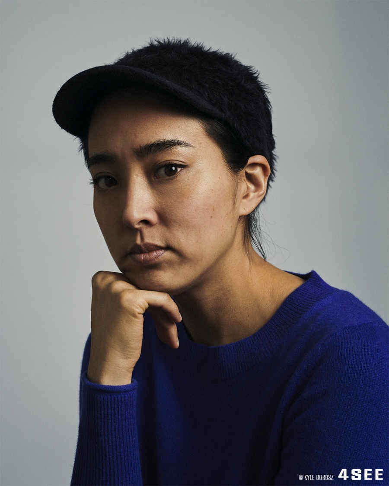

Speakers
Nao Tamura
 This cross-disciplinary designer won the prestigious Salone Satellite Award in 2010, and has since
worked
with
companies like Artek, Nanimarquina, and Wonderglass.
Kaajal Modi

Kaajal Modi is currently undertaking her PhD at the Digital Cultures Research Centre at University of
the
West
of England in Bristol, having freelanced as a designer for five years. This included working at the
Labour
Party
during the Remain campaign and the 2017 General Election.
Kelly Walters

Kelly Walters is an Assistant Professor of Communication Design in Parsons School of Design at The New School in New York. Her practice is concerned with explorations of race and identity, in the form of exhibitions, websites, and the printed form.
Schedule
- Welcome Speech,
July 10, 10am - Digital Cultures in the Modern Age with Kaaja Modi,
July 11, 10am-3pm - Cross Disciplinary Marketing for Designers,
July 12, 10am-3pm - Designing for human connections,
July 13, 10am-3pm - Closing Dinners,
July 13, 8pm-10pm
Featured Talks
Digital cultures in the modern age with Kaaja Modi
Learn how different cultures navigate the internet and how that marketing towards them will differ. Maximize your own brand and reach more people.
Cross Disciplinary Marketing for Designers
Learn how to expand your practice. Using digital and traditional media in harmony
Designing For Human Connections
Learn how to make connections in a cyber age. How to make and expand your brand beyond your social circles